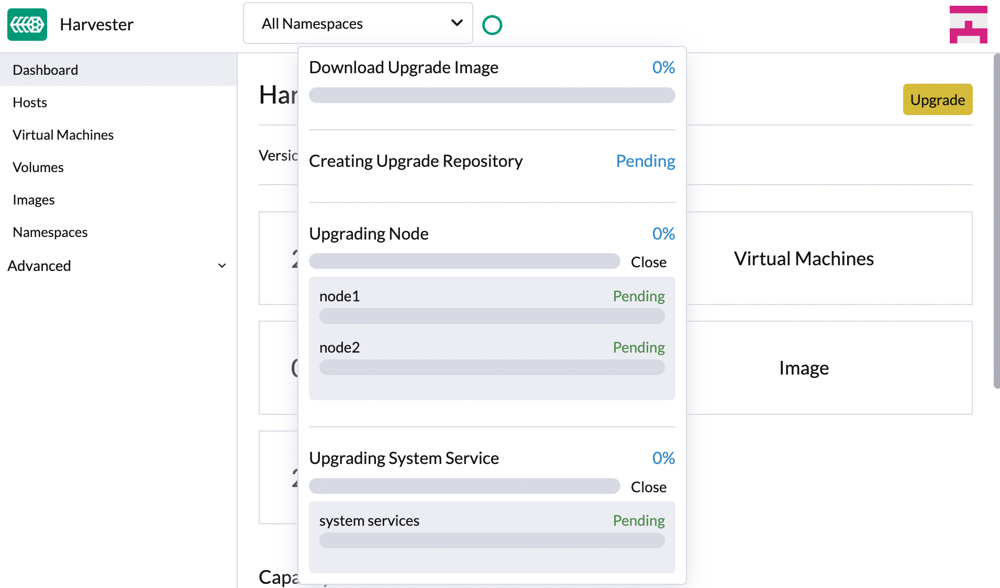

Upgrades
SUSE Virtualization is adopting a new lifecycle strategy that simplifies version management and upgrades. This strategy includes the following:
-
Four-month minor release cadence
-
Two-month patch release cadence
-
Component adoption policy
|
SUSE Virtualization does not support downgrades. This restriction helps prevent unexpected system behavior and issues associated with function incompatibility, deprecation, and removal. |
Upgrade paths
The following table outlines the supported upgrade paths.
| Installed Version | Supported Upgrade Versions |
|---|---|
v1.4.2 and v1.4.3 |
|
v1.4.1 and v1.4.2 |
|
v1.4.1 |
|
v1.4.0 |
|
v1.3.1 |
|
v1.2.2 and v1.3.0 |
|
v1.2.1 |
|
v1.1.2, v1.1.3, and v1.2.0 |
SUSE Virtualization v1.5.x and later versions allow the following:
-
Upgrading from one minor version to the next (for example, from v1.4.2 to v1.5.1) without needing to install the patches released in between the two versions. This is possible because SUSE Virtualization allows a maximum of one minor version upgrade for underlying components.
-
Upgrading to a later patch version (for example, from v1.5.0 to v1.5.1), assuming that the same component versions are used across the releases for a given minor version.
The following table outlines the components used in these versions:
| Component | SUSE Virtualization v1.4.2 and v1.4.3 | SUSE Virtualization v1.5.x |
|---|---|---|
KubeVirt |
v1.3 |
v1.4 |
SUSE Storage |
v1.7 |
v1.8 |
SUSE Rancher Prime |
v2.10 |
v2.11 |
RKE2 |
v1.31 |
v1.32 |
|
Skipping multiple Kubernetes minor versions is not supported upstream and is a key reason behind the limited upgrade paths. For more information, see Version Skew Policy in the Kubernetes documentation. |
Rancher upgrade
If you are using Rancher to manage your SUSE Virtualization cluster, you must upgrade Rancher before upgrading SUSE Virtualization.
|
The SUSE Virtualization and Rancher upgrade processes are independent of each other. During a Rancher upgrade, you can still access your SUSE Virtualization cluster using its virtual IP. SUSE Virtualization is not automatically upgraded. |
When a Rancher version reaches its End of Maintenance (EOM) date, SUSE Virtualization only provides fixes for critical security-related issues that affect integration functions (Virtualization Management). For more information, see the Support Matrix.
Before starting an upgrade
Check out the available upgrade-config setting to tweak the upgrade strategies and behaviors that best suit your cluster environment.
Start an upgrade
|
|
|
-
On the SUSE Virtualization UI Dashboard screen, click Upgrade.
The Upgrade button appears whenever a new version that you can upgrade to becomes available.
If your environment does not have direct internet access, follow the instructions in Prepare an air-gapped upgrade, which provides an efficient approach to downloading the ISO.

-
Select the version that you want to upgrade to.
If you require customizations, see Customize the version.
-
Click the progress indicator (circular icon) to view the status of each related process.

Customize the version
-
Download the version file (
https://releases.rancher.com/harvester/{version}/version.yaml).Example:
The v1.5.0 version file is downloaded as
v1.5.0.yaml.apiVersion: harvesterhci.io/v1beta1 kind: Version metadata: name: v1.5.0-customized # Changed, to avoid duplicated with the official version name namespace: harvester-system spec: isoChecksum: 'df28e9bf8dc561c5c26dee535046117906581296d633eb2988e4f68390a281b6856a5a0bd2e4b5b988c695a53d0fc86e4e3965f19957682b74317109b1d2fe32' # Don't change isoURL: https://releases.rancher.com/harvester/v1.5.0/harvester-v1.5.0-amd64.iso # Official ISO path by default releaseDate: '20250425' -
Add the necessary annotations.
-
Create the version using the command
kubectl create -f v1.5.0.yaml.
minCertsExpirationInDay Annotation
SUSE Virtualization checks the validity period of certificates on each node. This check eliminates the possibility of certificates expiring while the upgrade is in progress. If a certificate will expire within 7 days, an error is returned.
Example: harvesterhci.io/minCertsExpirationInDay: "14"
When this annotation is added, SUSE Virtualization returns an error when it detects a certificate that will expire within 14 days. For more information, see auto-rotate-rke2-certs.
skipGarbageCollectionThresholdCheck Annotation
SUSE Virtualization checks the disk space on each node to ensure that the kubelet’s image garbage collection threshold is not exceeded when the required images are loaded during upgrades.
Example: harvesterhci.io/skipGarbageCollectionThresholdCheck: true
When this annotation is added, SUSE Virtualization skips the check. For more information, see Free system partition space requirement.
|
Do not use this annotation in production environments. When the check is skipped, required images might be deleted, causing the upgrade to fail. |
Prepare an air-gapped upgrade
|
Make sure to check Upgrade paths section first about upgradable versions. |
Prepare the ISO file
-
Download an ISO file from the Releases page.
-
Save the ISO to a local HTTP server.
Assume the file is hosted at
http://10.10.0.1/harvester.iso.
Prepare the Version
-
Download the version file (
https://releases.rancher.com/harvester/{version}/version.yaml). -
Replace the
isoURLvalue in the file.apiVersion: harvesterhci.io/v1beta1 kind: Version metadata: name: v1.5.0 namespace: harvester-system spec: isoChecksum: <SHA-512 checksum of the ISO> isoURL: http://10.10.0.1/harvester.iso # change to local ISO URL releaseDate: '20250425'Assume the file is hosted at
http://10.10.0.1/version.yaml. If you require customizations, see Customize the version. -
Access one of the control plane nodes via SSH and log in using the root account.
-
Create a version object.
rancher@node1:~> sudo -i rancher@node1:~> kubectl create -f http://10.10.0.1/version.yaml
Manually start an upgrade before the official upgrade becomes available
The Upgrade button does not appear on the UI immediately after a new version is released. If you want to upgrade your cluster before the option becomes available on the UI, follow the steps in Prepare an air-gapped upgrade.
|
In production environments, upgrading clusters via the UI is recommended. |
Free system partition space requirement
SUSE Virtualization loads images on each node during upgrades. When disk usage exceeds the kubelet’s garbage collection threshold, the kubelet deletes unused images to free up space. This may cause issues in air-gapped environments because the images are not available on the node.
SUSE Virtualization includes checks that ensure nodes do not trigger garbage collection after loading new images.
If you want to try upgrading even if the free system partition space is insufficient on some nodes, you can update the harvesterhci.io/skipGarbageCollectionThresholdCheck: true annotation of the Version object.
apiVersion: harvesterhci.io/v1beta1
kind: Version
metadata:
annotations:
harvesterhci.io/skipGarbageCollectionThresholdCheck: true
name: 1.5.0
namespace: harvester-system
spec:
isoChecksum: <SHA-512 checksum of the ISO>
isoURL: http://192.168.0.181:8000/harvester-master-amd64.iso
minUpgradableVersion: 1.4.1
releaseDate: "20250630"|
Setting a smaller value than the pre-defined value may cause the upgrade to fail and is not recommended in a production environment. |
The following sections describe solutions for issues related to this requirement.
Set up a private container registry and skip image preloading
The system partition might still lack free space even after you remove images. To address this, set up a private container registry for both current and new images, and configure the setting upgrade-config with following value:
{"imagePreloadOption":{"strategy":{"type":"skip"}}, "restoreVM": false}SUSE Virtualization skips the upgrade image preloading process. When the deployments on the nodes are upgraded, the container runtime loads the images stored in the private container registry.
|
Do not rely on the public container registry. Note any potential internet service interruptions and how close you are to reaching your Docker Hub rate limit. Failure to download any of the required images may cause the upgrade to fail and may leave the cluster in a middle state. |
Virtual Machine Backup Compatibility
You may encounter certain limitations when creating and restoring backups that involve external storage.
Longhorn Manager Crashes Due to Backing Image Eviction
|
When upgrading to SUSE Virtualization v1.4.x, Longhorn Manager may crash if the To prevent the issue from occurring, ensure that the |
Re-enable RKE2 ingress-nginx admission webhooks (CVE-2025-1974)
If you disabled the RKE2 ingress-nginx admission webhooks to mitigate CVE-2025-1974, you must re-enable the webhook after upgrading to SUSE Virtualization v1.5.0 or later.
-
Verify that SUSE Virtualization is using nginx-ingress v1.12.1 or later.
$ kubectl -n kube-system get po -l"app.kubernetes.io/name=rke2-ingress-nginx" -ojsonpath='{.items[].spec.containers[].image}' rancher/nginx-ingress-controller:v1.12.1-hardened1 -
Run
kubectl -n kube-system edit helmchartconfig rke2-ingress-nginxto remove the following configurations from theHelmChartConfigresource.-
.spec.valuesContent.controller.admissionWebhooks.enabled: false -
.spec.valuesContent.controller.extraArgs.enable-annotation-validation: true
-
-
Verify that the new
.spec.ValuesContentconfiguration is similar to the following example.apiVersion: helm.cattle.io/v1 kind: HelmChartConfig metadata: name: rke2-ingress-nginx namespace: kube-system spec: valuesContent: |- controller: admissionWebhooks: port: 8444 extraArgs: default-ssl-certificate: cattle-system/tls-rancher-internal config: proxy-body-size: "0" proxy-request-buffering: "off" publishService: pathOverride: kube-system/ingress-exposeIf the
HelmChartConfigresource contains other customingress-nginxconfiguration, you must retain them when editing the resource. -
Exit the
kubectl editcommand execution to save the configuration.SUSE Virtualization automatically applies the change once the content is saved.
-
Verify that the
rke2-ingress-nginx-admissionwebhook configuration is re-enabled.$ kubectl get validatingwebhookconfiguration rke2-ingress-nginx-admission NAME WEBHOOKS AGE rke2-ingress-nginx-admission 1 6s -
Verify that the
ingress-nginxpods are restarted successfully.kubectl -n kube-system get po -lapp.kubernetes.io/instance=rke2-ingress-nginx NAME READY STATUS RESTARTS AGE rke2-ingress-nginx-controller-l2cxz 1/1 Running 0 94s
Upgrade is stuck in the "Pre-drained" state
The upgrade process may become stuck in the "Pre-drained" state. Kubernetes is supposed to drain the workload on the node, but some factors may cause the process to stall.

A possible cause is processes related to orphan engines of the Longhorn Instance Manager. To determine if this applies to your situation, perform the following steps:
-
Check the name of the
instance-managerpod on the stuck node.Example:
The stuck node is
harvester-node-1, and the name of the Instance Manager pod isinstance-manager-d80e13f520e7b952f4b7593fc1883e2a.$ kubectl get pods -n longhorn-system --field-selector spec.nodeName=harvester-node-1 | grep instance-manager instance-manager-d80e13f520e7b952f4b7593fc1883e2a 1/1 Running 0 3d8h -
Check the Longhorn Manager logs for informational messages.
Example:
$ kubectl -n longhorn-system logs daemonsets/longhorn-manager ... time="2025-01-14T00:00:01Z" level=info msg="Node instance-manager-d80e13f520e7b952f4b7593fc1883e2a is marked unschedulable but removing harvester-node-1 PDB is blocked: some volumes are still attached InstanceEngines count 1 pvc-9ae0e9a5-a630-4f0c-98cc-b14893c74f9e-e-0" func="controller.(*InstanceManagerController).syncInstanceManagerPDB" file="instance_manager_controller.go:823" controller=longhorn-instance-manager node=harvester-node-1The
instance-managerpod cannot be drained because of the enginepvc-9ae0e9a5-a630-4f0c-98cc-b14893c74f9e-e-0. -
Check if the engine is still running on the stuck node.
Example:
$ kubectl -n longhorn-system get engines.longhorn.io pvc-9ae0e9a5-a630-4f0c-98cc-b14893c74f9e-e-0 -o jsonpath='{"Current state: "}{.status.currentState}{"\nNode ID: "}{.spec.nodeID}{"\n"}' Current state: stopped Node ID:The issue likely exists if the output shows that the engine is either not running or not found.
-
Check if all volumes are healthy.
kubectl get volumes -n longhorn-system -o yaml | yq '.items[] | select(.status.state == "attached")| .status.robustness'All volumes must be marked
healthy. If this is not the case, report the issue. -
Remove the
instance-managerpod’s PodDisruptionBudget (PDB).Example:
kubectl delete pdb instance-manager-d80e13f520e7b952f4b7593fc1883e2a -n longhorn-system
Related issues:
Recurring SUSE Storage snapshots and backups are unsupported
Recurring SUSE Storage snapshots and backups are not integrated into SUSE Virtualization. If you decide to use this feature, you must disable all recurring snapshot and backup jobs in SUSE Storage before starting the upgrade.
For more information about the incompatibility, see Scheduled virtual machine backups and snapshots.